Abstract
This lab is an introduction to writing functions and manipulating sound signals.
Part 1 Exercise 1
For 1, the output is i. This is because Matlab recognizes and can handle complex number. The imaginary component (i) of complex numbers is the sqrt(-1) by definition. The result makes sense.
For 2, I got 2i. Matlab allows representing the imaginary number i as either an i or a j. Thus, i + j = i + i = 2 ⋅ i. The result makes sense.
For 3, please see the code. The angle is in radians (0.785 vs 45 degrees). The magnitude is the result from abs(). The angle is from angle(). The real and imaginary components are from real() and imag()
For 4, from the code, the magnitude of the sum is 3.4023.
>> sqrt(-1)
ans =
0.0000 + 1.0000i
>> i+j
ans =
0.0000 + 2.0000i
>> z1 = 1 + j;
>> abs(z1)
ans =
1.4142
>> angle(z1)
ans =
0.7854
>> real(z1)
ans =
1
>> imag(z1)
ans =
1
>> z2=2*exp(j*3/pi)
z2 =
1.1553 + 1.6325i
>> abs(z1+z2)
ans =
3.4023
Part 1 Exercise 2
x1 can be represented as tcos(t) + jtsin(t) .This representation clearly shows that x1 has an odd real number (t is odd and cos(t) is even, so tcos(t) is an odd signal) and even imaginary number (t is odd and sin is odd, so their multiplication is an even signal).
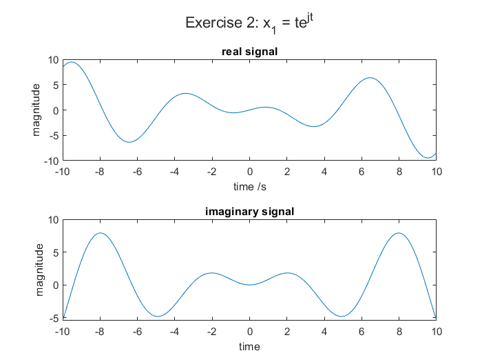
t = -10:0.1:10;
x1= t .* exp(j*t);
layout = tiledlayout(2,1);
title(layout, "Exercise 2: x_1 = te^{jt}");
nexttile
plot(t,real(x1))
title("real signal")
ylabel("magnitude")
xlabel("time /s")
nexttile
plot(t,imag(x1))
title("imaginary signal")
xlabel("time")
ylabel("magnitude")
Part 1 Exercise 3
To double the period, I halved the frequency.
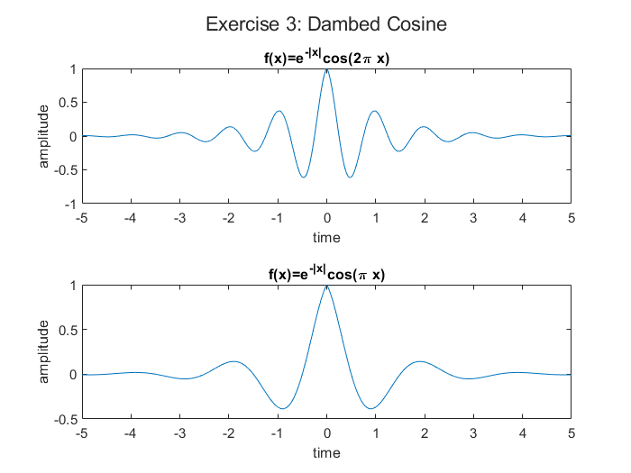
Part 1 Exercise 4
The period of the second signal is $\frac{1}{F}$. $F = \frac{\pi}{2 \pi}$. Thus, the period is $\frac{2\pi}{\pi} = 2$ seconds.
The two signals have the same envelope which exponentially decays with respect to time.
The third signal would have half the period but twice the frequency of the first signal. In comparison to the second signal, the third signal would have a fourth of the period but four times the frequency. They will still have the same envelope.
Part 1 Exercise 5
Below are the original signal, the signal with higher frequency, and the signal with faster decay.
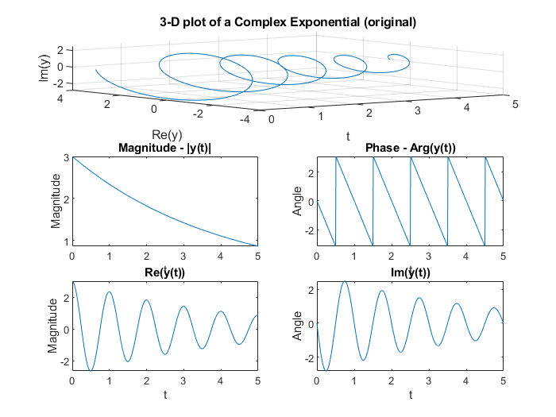
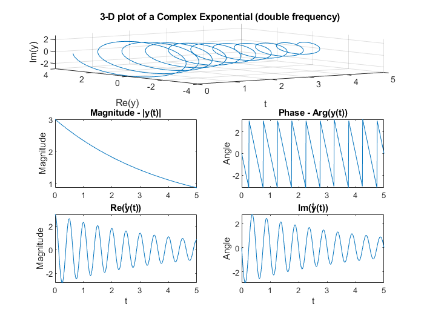
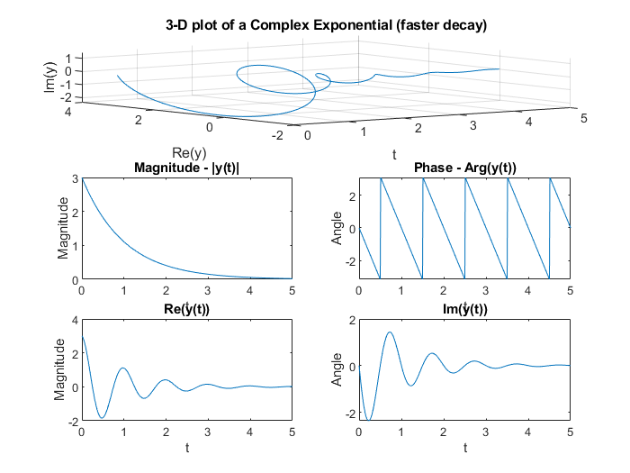
Part 1 Exercise 6
Plotting a function of the form of f(t) = 3e − j(2π)t with respect to its real components and its imaginary components will result in a circle because e − j2πt = 3cos(−2πt) + 3jsin(−2πt) is the unit circle multiplied by 3.
Multiplying the f(t) by something of the form g(t) = e − 0.25t causes the function to decay with time. Together with the circle, this makes a spiral (in 2D as you can see below). So the magnitude starts at an initial value of 3 and exponentially decays to almost zero because of g(t).

If the function is plotted with respect to time too, the circle will be expanded into a helix. The spiral will be expanded into a helix with decaying radius which is what we see in the 3D plot.
Now, let me explain each of the 5 subplots in the original complex exponential function. The 3d plot is the helix with decaying radius I explained. When I doubled the frequency, the helix had more cycles within the same amount of time. When I hastened the decay, the helix decayed into a line-like signal much faster.
The top left 2d image is the exponential decay function I earlier called g(t) except that it is multiplied by 3 to be 3g(t). There is no difference between the original and double frequency versions of this plot. But clearly, the faster decay function has its magnitude approach 0 much faster than the original one.
The top right image shows the angle of the function. The angle starts at 0, then decreases to − π. Then the angle wraps around to π, then decreases to − π again and repeats the cycle. The angle is decreasing at a linear rate but matlab will convert any value (val) below − π, to 2π + val because the function originally was a circle. This is the explanation for the zigzagging pattern. Though there is no difference between the faster decay and original versions of this plot, clearly the higher frequency version has shorter periods.
The bottom 2d images are the real and imaginary parts of the function. Normally, they should be cosine and sine respectively. But because of the exponential decay, they are decaying cosine and sine functions. The envelope for both of the plots is the top left image that shows the exponential decay.
The bottom 2d images demonstrate both effects of faster decay and higher frequency. When the decay was faster, the plots had an envelop that decayed to 0 much faster. When the frequency was higher, the plots clearly showed faster oscillations.
The 2d subplots show that my functions really are a higher frequency and a faster decay versions in that order.
Part 2 Exercise 0
Load loads saved variables or data from a file or a location into the workspace (memory) so that you can refer to and use the data.
linspace(X1, X2, N) generates N points between X1 and X2. The points are uniformly distributed and equidistant from their neighbors. They increase in a linear manner. In effect, it starts with the first element being X1, and generates the remaining (N-1) elements where each element is equal to the previous element plus (X2-X1)/(N-1). The only exception is when N is 1, then the vector simply contains X2.
>> help linspace
linspace Linearly spaced vector.
linspace(X1, X2) generates a row vector of 100 linearly
equally spaced points between X1 and X2.
linspace(X1, X2, N) generates N points between X1 and X2.
For N = 1, linspace returns X2.
Class support for inputs X1,X2:
float: double, single
See also logspace, colon.
Documentation for linspace
Other functions named linspace
Part 2 Exercise 1 Fader
I implemented the fade function but with a small optimization. Instead of multiplying level at the last line, I used it to generate the values in the linspace line.
Here is the fade function.
Here is the testing code for the fade function.
Here is the output for the fade function.
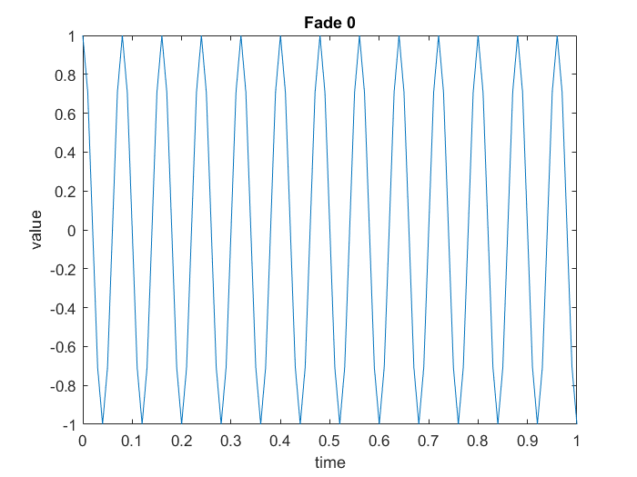
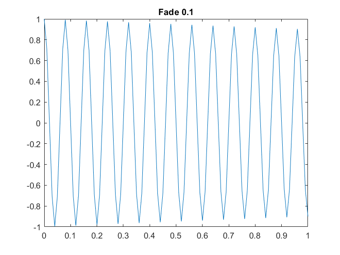
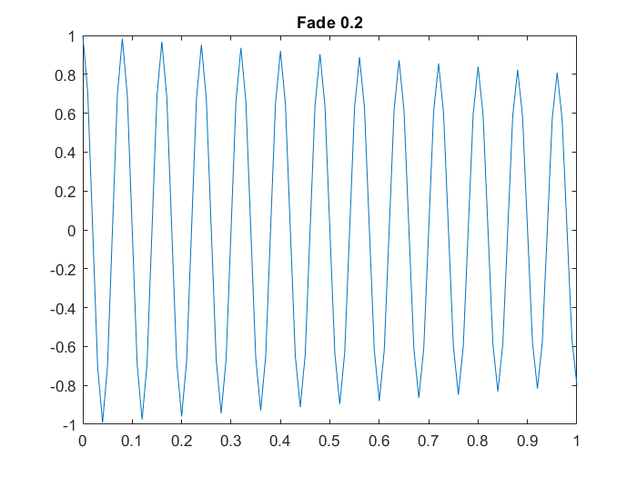
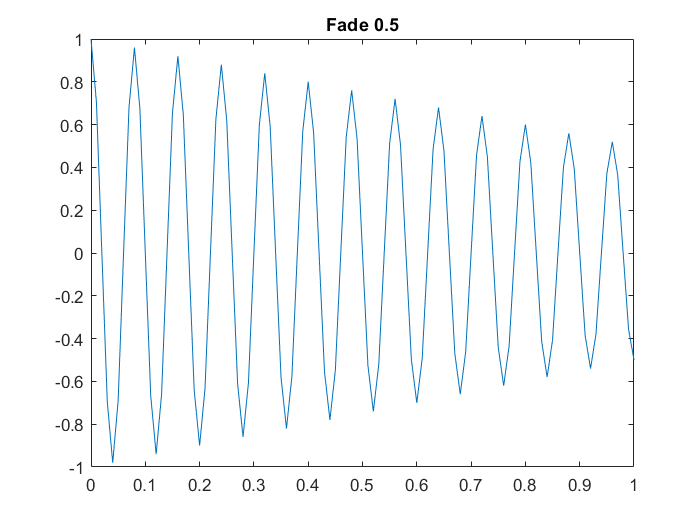
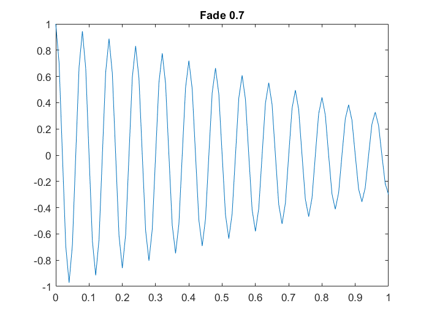
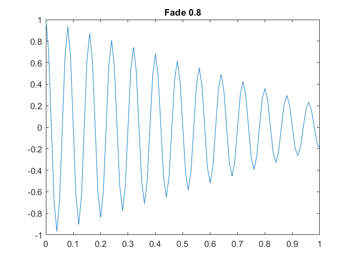
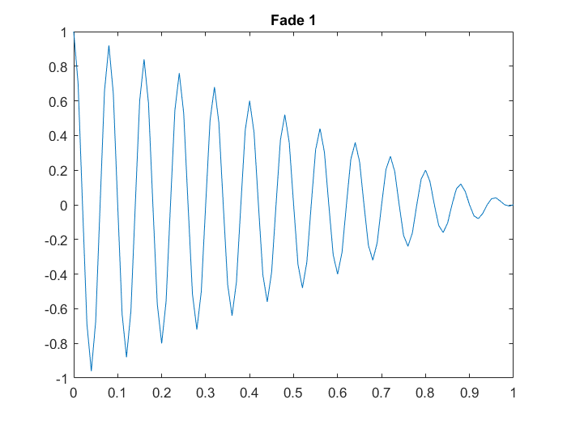
Part 2 Exercise 2 Repeater
I implemented the repeater with the optional parameter to insert silence. Please compare the time of the repeated signal with the one with silence. As you can see, the one with silence has time values up to 1.5 ⋅ 105 while the one without silence only goes up to 7.2 ⋅ 104.
Here is the repeat function.
Here is the testing code for the repeat function.
Here is the output for the repeat function.
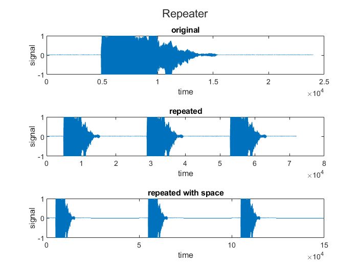
Part 2 Exercise 3 Shifter
I implemented the delay function so that it can both delay and hasten. I implemented checks so that it doesn’t fail whether the delay is positive, negative, or bigger than the length of the signal.
I used Matlab’s testing functionalities for the first time.
Here is the delay function.
Here is the testing code for the delay function.
Here is the output for the delay function.
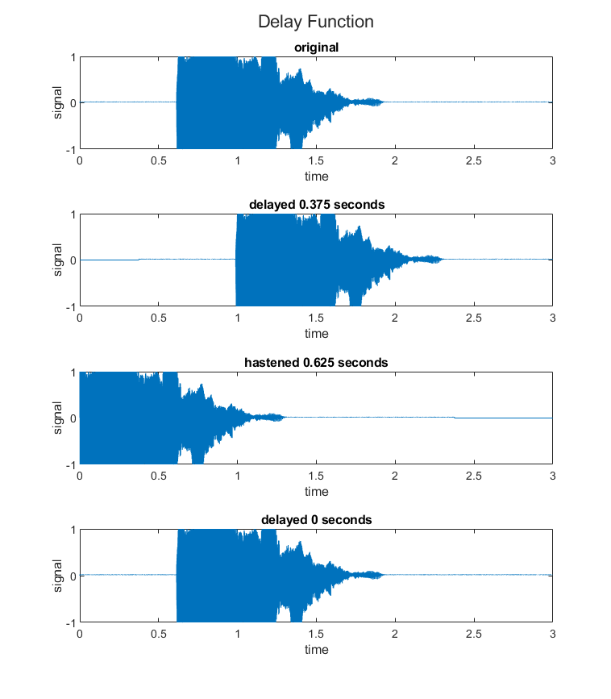
Part 2 Exercise 4 Mixer
In this exercise, I created a mixer that adds two signals together and then normalizes the sound such that all the sounds are in the range of [-1,1].
If the sounds are not normalized, matlab will clip values that are outside the range of [-1,1]. My understanding is that this is clamping. The good thing is matlab won’t crash. The bad thing is that the noise ratio with respect to the actual signal will increase and the signal will become more noisy. It also makes it so all clipped sounds are equally loud when maybe they weren’t in the original signal.
Here is the mixer function.
Here is the testing code for the mixer function.
Here is the output for the mixer function.
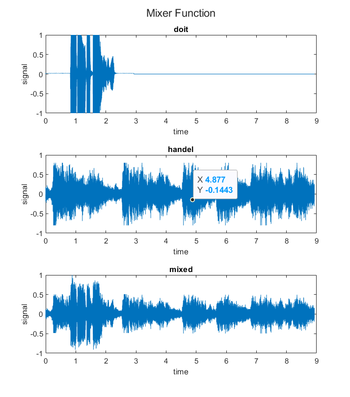
Conclusion
In this lab, I experimented with Matlab’s complex numbers. I experimented with playing sounds in Matlab. I created matlab functions that can delay, hasten, repeat, and mix sounds and plotted the sounds.